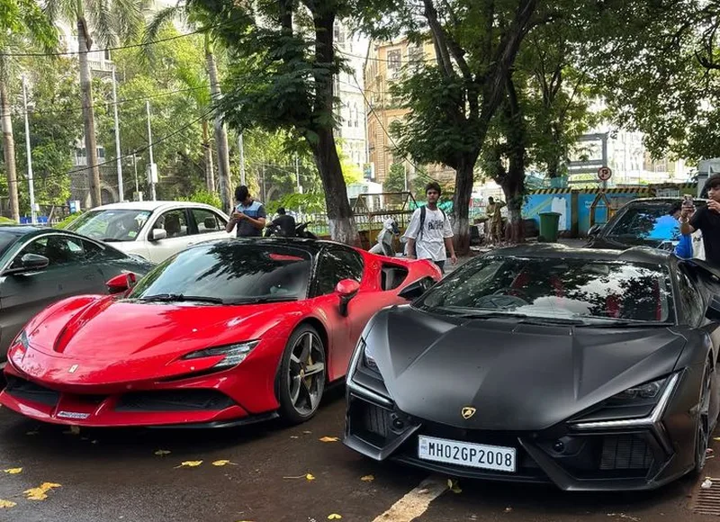

It is a little after 8 on a weekday evening, and Golf Course Road is doing what it does best: not moving. Then you hear it. A low, rolling growl somewhere behind the traffic, the kind of sound that doesn't belong to a city of honking autos and idling SUVs. Heads turn. A man outside a café stops mid-sentence. Three phones rise at once, and a bright orange blur slides past at roughly the speed of a brisk walk.
The Lamborghini has arrived. So has its audience.
This happens in Gurgaon almost every day, and nobody finds it strange anymore. That is exactly what makes it worth looking at.
A city that arrived overnight
To understand the cars, you have to understand how quickly the city around them appeared. Within a single generation, Gurgaon went from scattered farmland to a skyline of glass towers, corporate campuses and gated towers with their own clubhouses. Real estate, multinationals, startups and old family businesses all fed the same boom.
That speed shaped who buys the cars. Many owners here are first-generation wealthy, and for them a supercar is less about horsepower than about announcement. It says that you have arrived, and it says it in a language that needs no translation, even to someone who has never read a spec sheet.
Here is the great irony of the scene: Gurgaon may be one of the least supercar-friendly cities in the country.
Picture a Lamborghini with a few inches of ground clearance meeting a speed breaker built by someone's cousin overnight. Picture a six-figure sports car crawling through NH48 traffic, or tiptoeing around a waterlogged underpass after the first monsoon rain. A machine engineered for the autobahn spends most of its life in second gear, flanked by delivery bikes.
The most expensive car on the road is very often the slowest one on it.
And yet people keep buying them. Which tells you something: the car was never really about the drive. It is about being seen.
The car is only half the statement. In Haryana, fancy registration numbers are sold through public auctions, and the most sought-after ones have fetched sums that rival the price of the car they are bolted onto. A string of repeating digits can cost more than a luxury sedan.
Think about what that means. People are paying a small fortune for a few characters on a metal plate, because the plate is visible to everyone behind the car, including the ones who will never see the badge on the bonnet. Even the number has become a status symbol.
If the supercar needs an audience, Gurgaon has built it a stage. Golf Course Road, Cyber Hub and the streets around the DLF neighbourhoods work as informal catwalks, places where cars are less transport than performance.
Watch a sighting unfold and you see the ritual. The engine note draws attention first. Then come the phones, the quick video, the tag. Within minutes the car has left the road and entered Instagram, where it will live on in reels, spotter pages and group chats. The scene doesn't just exist on the street. It exists in the feed, and each one feeds the other.
There are really two communities here. The first is the owners, a mixed group of founders, business families and weekend enthusiasts, some of whom genuinely love driving and some of whom love being noticed. The second is the spectators: photographers who know which corner to wait at, teenagers who can identify a model from the sound alone, and spotters who treat each sighting like a small trophy.
The two depend on each other. A supercar with no audience is just an uncomfortable car. An audience with nothing to watch is just a crowd on a pavement. The scene is the relationship between them.
Gurgaon sits right next to Delhi, yet its car culture feels like its own thing. Delhi wears its history; it has old money, heritage and a certain understated confidence. Gurgaon is newer and louder, built on ambition and still writing its own story. The cars reflect that. Where Delhi tends to whisper, Gurgaon is more likely to rev.
That is a generalisation, of course, and there are quiet-luxury owners here and loud ones there. But as a feeling, it holds up on most evenings.
What the engine is really saying
Back on Golf Course Road, the orange car finally clears the traffic and disappears toward the expressway, its sound fading long after the car is gone. The crowd lowers its phones and goes back to its coffee.
It is easy to dismiss all of this as showing off, and some of it is. But look closer and the supercar says something about the city itself: a place that grew fast, that believes in visible success, and that is still deciding what it wants to be.
Maybe that's the real question underneath the noise. In a city built on speed, what is its car culture running on?
Want more? Read more of our blogs here.